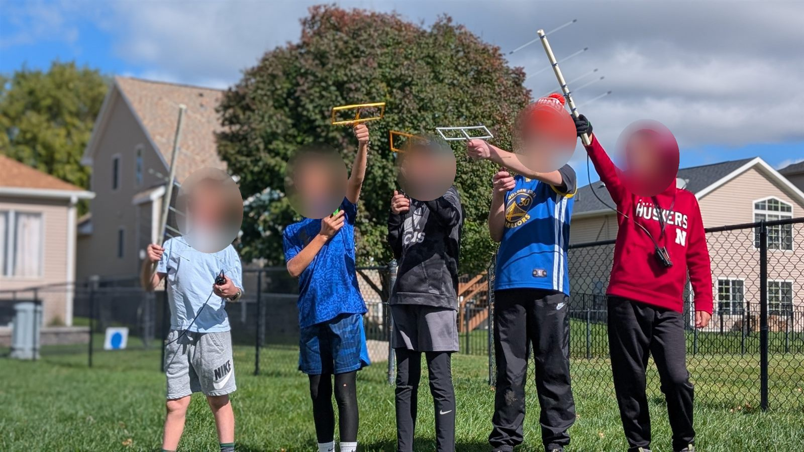

A handheld radio and a hand-held antenna are enough to talk through a satellite passing overhead. Kids get to aim the antenna, hear the satellite come up out of the noise, and talk to someone hundreds of miles away.

A few amateur satellites, and the International Space Station, carry FM repeaters. You transmit up on one band and hear everyone in range on the other, for as long as the satellite is above the horizon.
One trip of a satellite across the sky, from rising (AOS) to setting (LOS). Usually ten minutes or so.
How high the satellite climbs. Higher passes are longer and easier, so we look for good ones.
Everyone who can see the satellite at the same moment. That's who we can talk to.
Finds the times in the next few weeks when several good FM satellite passes fall within a couple of hours, so a club event gets more than one chance.
What makes it different:
Want to know more? AMSAT keeps the list of active satellites and their frequencies.